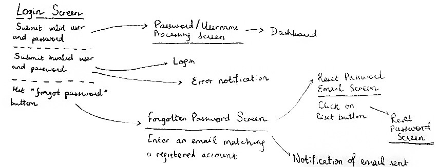
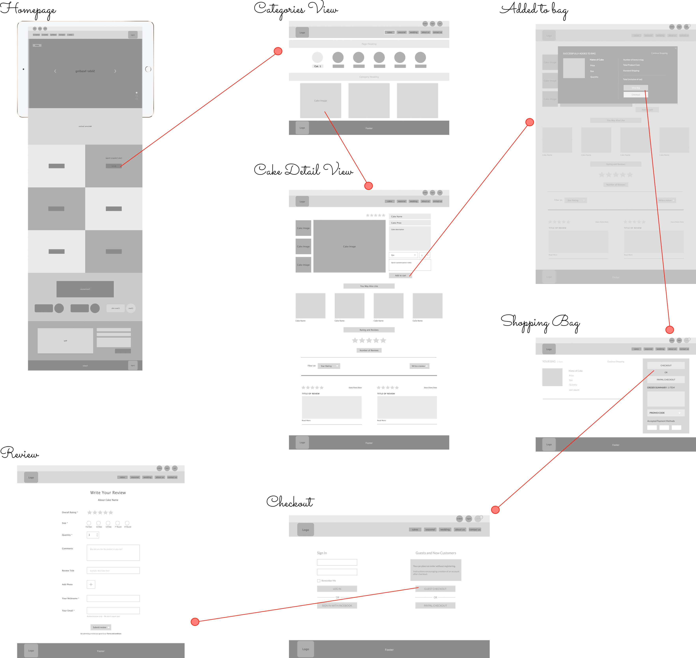
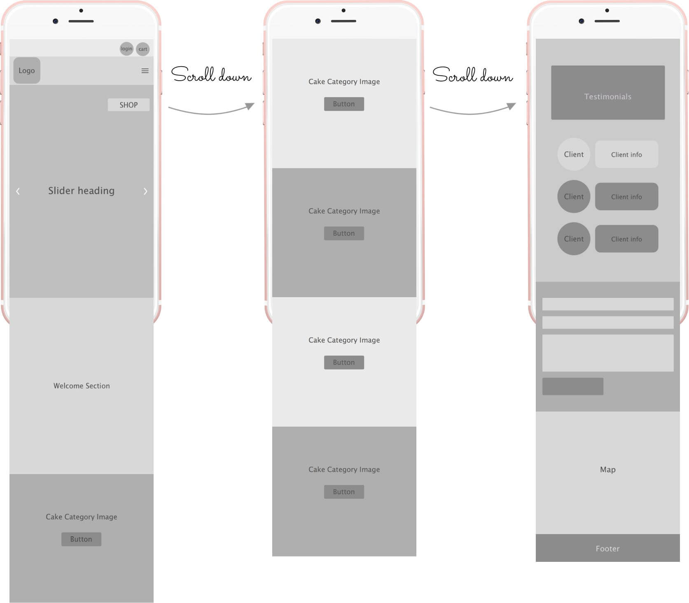
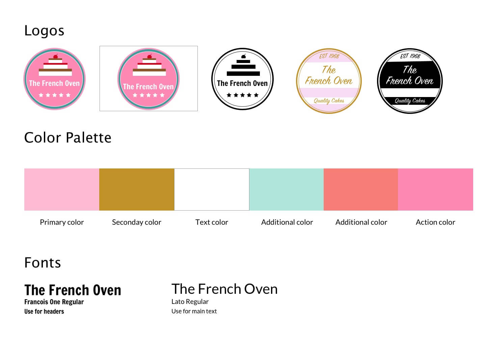
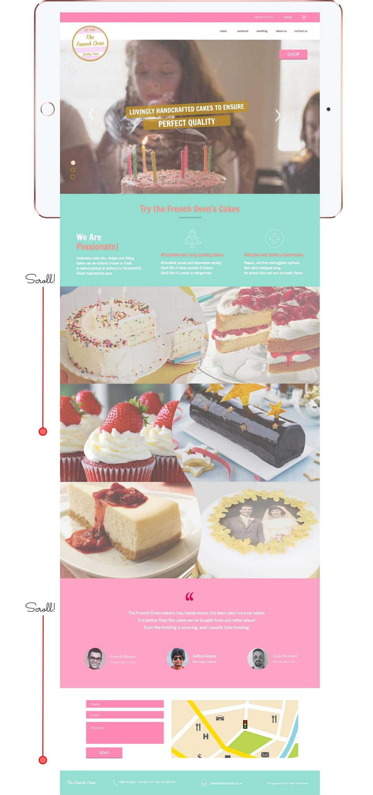

The French Oven is a bakery that sells frozen baked goods. They specialize in both custom orders and large scale production. They are known for their colorful sweet frosting and whimsical yet professional designs. The bakery wanted to increase their custom order business and wanted to explore ecommerce. They wanted a look at what a modernized, elegant web site with ecommerce integrated would look like.
Competitive Analysis was performed to assess how other successful ecommerce bakery sites organized and presented information. One that really stood out was Mahzedahr Bakery - for its large high quality product images, easy navigation, obvious cart icon and simple checkout process. Examining other award winning ecommerce websites and reading case studies highlighted the importance of key factors such as high-res zoomable photos. The client was asked to provide information about their customer demographics and their existing website's google analytics data was examined. Decisions on which features were to be included and emphasized were affected by who the primary audience is going to be.
User stories were used to define requirements and ensured that the user was always in the center of design and development process:
User stories were used to create user flows. A sample user flow is seen below for a login use case (the underlined text represents what the user sees and below that is the corresponding user action): 
Low fidelity reponsive wireframes were created in Sketch for the primary pages of the site, based on user stories and user flows.
InVision was used to assemble the wireframes into a clickable prototype, which became the primary way to communicate about the project with the client. Below are some of the prototypes that were created:
Desktop:

Further explanation of the prototype can be seen on Dribbble
Mobile:

Further explanation of the prototype can be seen on Dribbble
A style guide was created based on colors commonly found in cake frosting. Furthermore the logo was redesigned. Two different variations were designed and feedback was gathered from users on which one was more effective:

Using this style guide the design phase was completed. A sample of the homepage design was sent to the client for approval. After this step the design for all remaining pages was completed:

Animations of microinteractions were created with Prototype and can be seen on Dribbble
A/B testing was performed. Usability testing was performed using Usability Hub.
The final product given to the client was a design of a reponsive, modern, elegant and fully tested ecommerce solution. I advised the client on technology decisions in regards to future implementation.